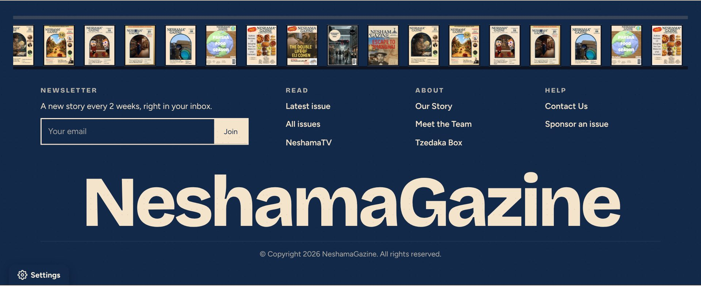
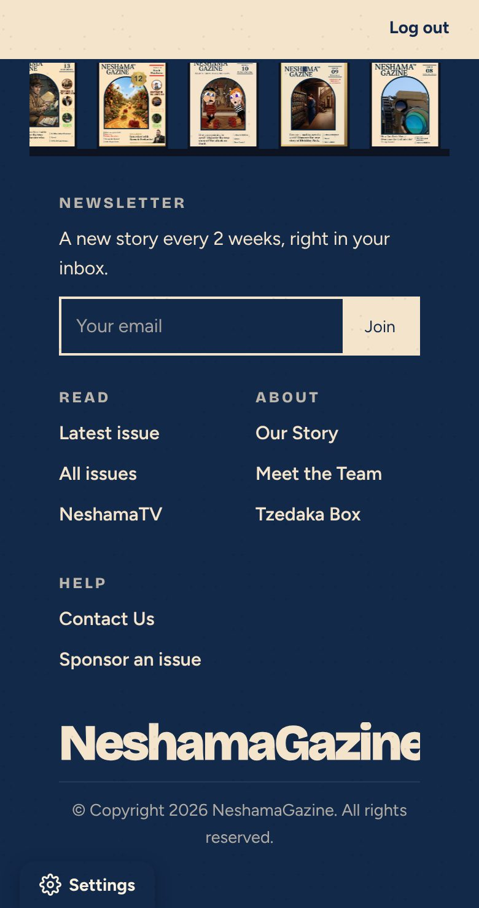
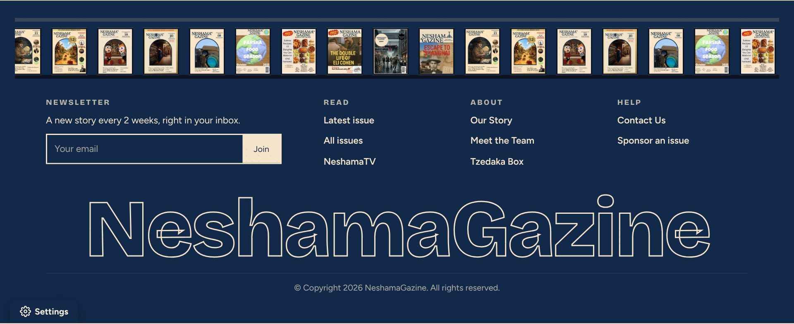
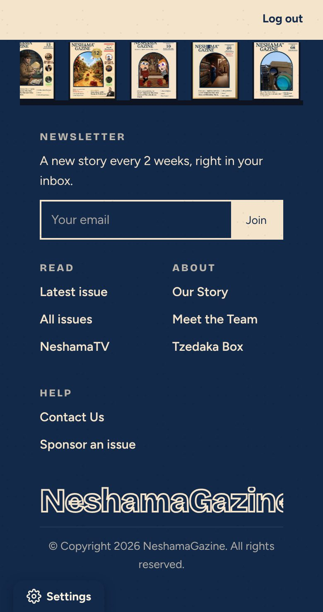
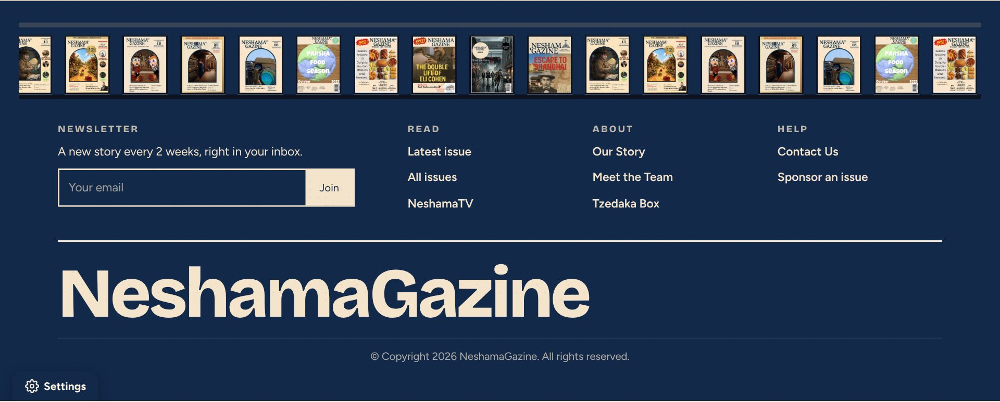
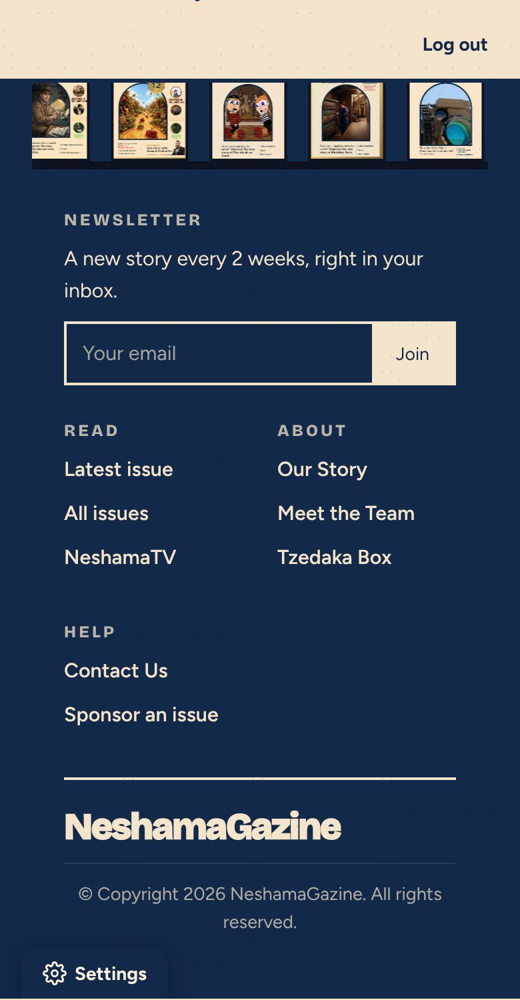
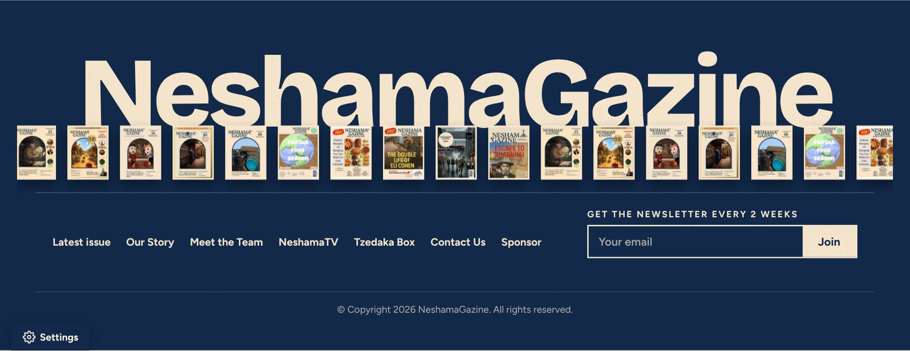
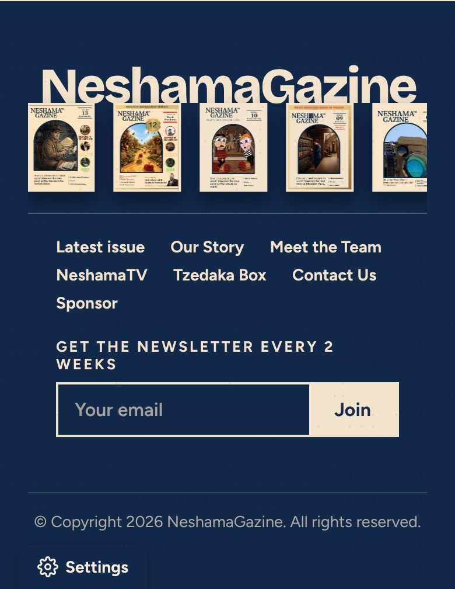

Every option uses only navy and beige, and the big NeshamaGazine is one color. Left is a computer, right is a phone. Tell Claude the letter.
The original layout, big solid word.


The original layout, big outlined word in the website's own font.


The original layout, smaller word on the left under a line.


Today's layout, but the word is solid in the website's own font.

